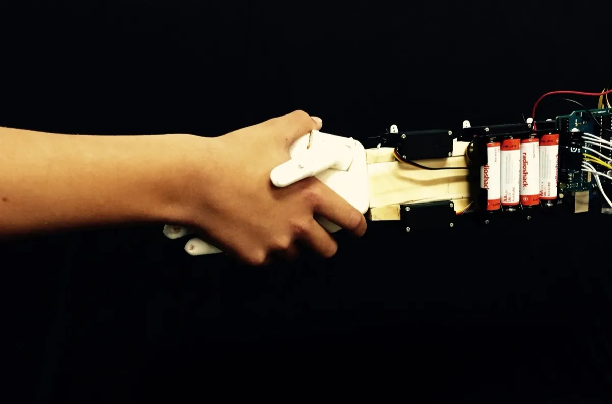
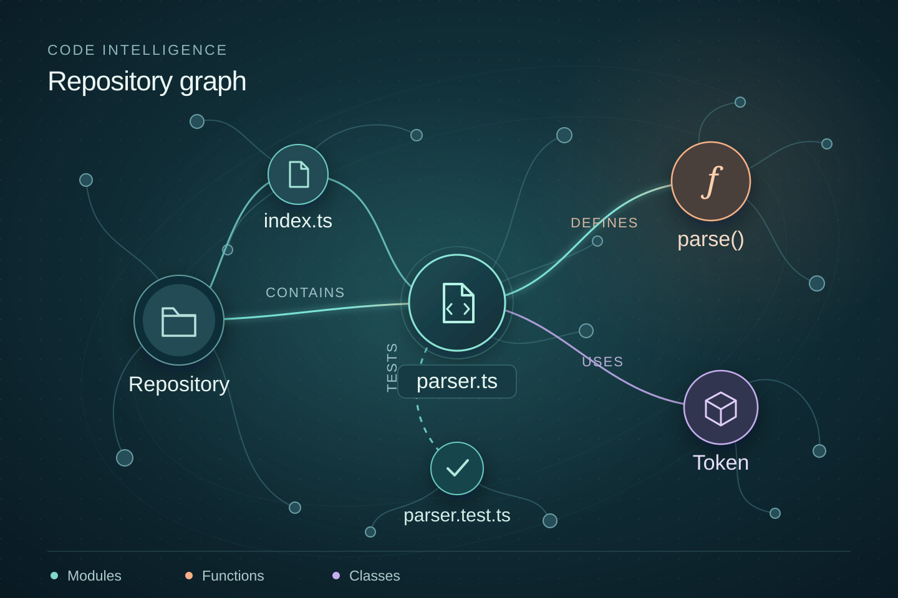
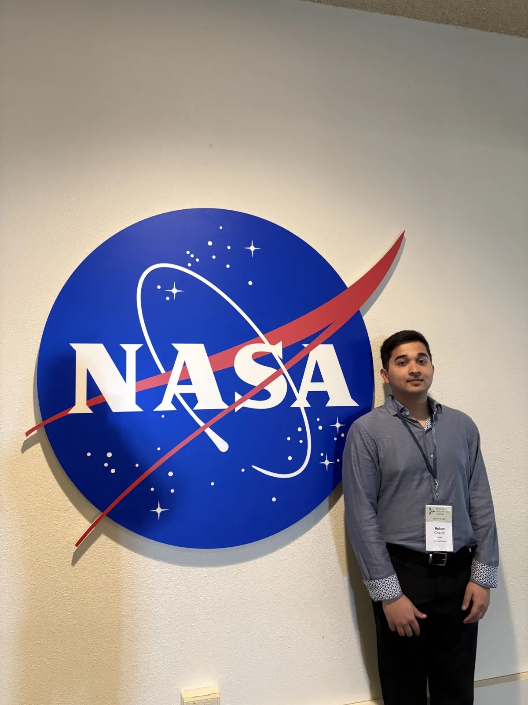
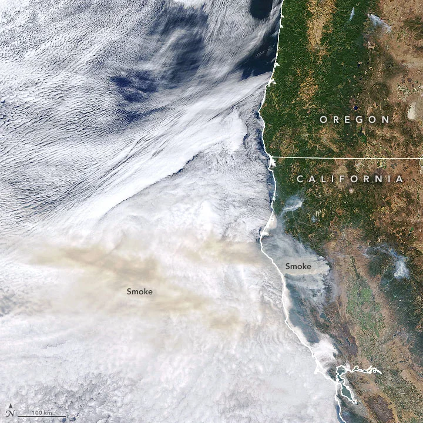

Independent project
Myoelectric bionic hand
An independent hardware project connecting muscle-signal sensing, mechanical construction, and actuation.
- Context
- Independent engineering
The independent bionic hand project and software work at Texas Instruments, SOMA, Trivium, and Marsh. Explore the project, organization, and my contribution.

An independent hardware project connecting muscle-signal sensing, mechanical construction, and actuation.

Illustrative code graphAt Texas Instruments, I work with Neo4j for code intelligence and build a separate XML editor for an internal document engine.

At SOMA, I built a meeting-coach MVP with custom on-premises transcript scoring, GPT and Gemini integrations, and product research.

Wildfire context · NASA Earth ObservatoryAt Trivium, I built and deployed two production-ready LLM agents for financial analysis and wildfire-risk exploration.

At Marsh, I contributed to full-stack development of a centralized accounting memo application and presented work to stakeholders and controllers.
Try an organization name, a project topic, or another filter.
Both projects were built during my 2023–2024 role at Trivium.
Minimax search with alpha-beta pruning for gameplay decisions.
AlgorithmsA rotor, reflector, and plugboard simulation for encryption and decryption.
SimulationGPT-based risk exploration and custom visual analytics using the US Wildfires Database.
ExploreFor professional inquiries and collaborations, reach me by email or LinkedIn.